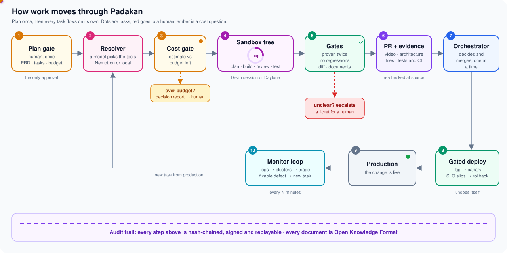

Getting a plausible change from an agent is solved. Shipping it is not.
Nobody merges and deploys an agent's change without reading it first. So a human stays in the loop, the loop becomes the bottleneck, and the autonomy quietly disappears.
It is a trust problem, not a capability problem. Padakan puts the trust in the system around the agent, so the agent itself can be any agent.
Plan once. Then every task flows on its own.
Each dot is a task. It moves through the top row, ships, and comes back as a new task when production shows a defect. Red dots leave the line for a human. Amber dots stop for a cost decision.


Plan gate you, once
You approve the PRD, the task plan with acceptance criteria, the budget and the brand. Once. It is the only approval.
Resolver Nemotron or a local model
A model picks each task's tools, platform and verify kit (MCP servers, CLIs) from a fixed registry, with a cost range.
Cost gate arithmetic, then you
The worst case is checked against the budget left. Over budget, only that task pauses and you get a decision report.
Sandbox tree the agent
One sandbox per task, a Devin session or a Daytona box. The agent plans, builds, reviews and tests in a loop. It never asks; it decides by rule or reports blocked.
Gates code, never a model
Proven twice: the task's tests and every acceptance criterion live. No regressions. Deterministic diff inspection. Valid documents.
PR and evidence the verifier
A video of the change working, the architecture of the change, the files touched from git, tests and CI, each re-checked at its source.
Orchestrator the orchestrator
Merges a verified head, one change at a time. Unclear verdicts become a ticket for a human, never a guess.
Gated deploy code
Behind a flag, then a canary. When the error rate passes the SLO, it rolls back by itself.
Production live
The change is live, and every decision that put it there is on the record.
Monitor loop a model, then rules
Logs are clustered and triaged. Fixable defects become new tasks; security and anything uncertain go to a human.
The agent is a black box. Everything around it is not.
Swap the agent for any other. The confidence comes from checks that do not depend on it.
Code decides what ships
Diff size, protected paths, secrets and dependencies are checked by rules. A model may advise; it never decides.
Effects, not claims
"Done" means a commit on the remote, a PR whose head is that commit, and green CI. A status field alone means nothing.
Unclear means a human
Any gate that does not clearly pass escalates. Deploys roll back on their own. Nothing is ever guessed.
A signed audit trail
Every step is hash-chained and signed. Edit or delete one entry and verification fails at that line. Any decision can be replayed.
Headless by design
After the plan gate the only question is about money. Agents look things up, decide by rule, or report blocked.
Readable by anyone
Every brief, report and decision is an Open Knowledge Format document, kept in a records folder next to your repository.
Three commands to a shipped task.
Install the plugin, onboard your repository, approve one plan. From there the task runs unattended.
Read the architecture# install the plugin in Claude Code /plugin install padakan --marketplace Rouxxel/Padakan # once per repository: records folder, settings, checks /padakan:onboard # the one human gate /padakan:plan "export the dashboard as CSV" # from here on, unattended /padakan:build PAD-12
Open models, real sandboxes, plain files.
Let your repository ship its own changes, and sleep at night.
The architecture, the plugin and every test are on GitHub.